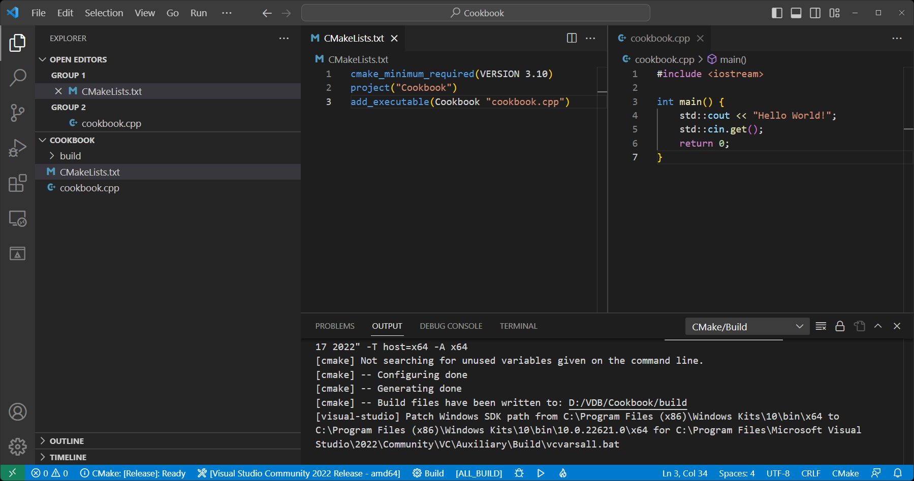
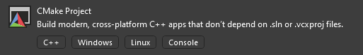

- Introduction
- Who is this for?
- What do we need?
- Basic Setup
Introduction
OpenVDB is a powerful open-source library for efficient manipulation of volumetric data, and CMake is a versatile build system that can be used to manage and configure a project's dependencies and build processes. In this documentation, we will explain how to use OpenVDB and CMake together to build and configure your projects.
Who is this for?
This is for you when:
- You already have some experience with C++
- You know how to use git
- You want to start using CMake on Windows
- You don't know where to start with openVDB
This isn't for you when:
- You have no experience with programming
- You are a master in CMake
- You already worked with openVDB
What do we need to start?
We'll need Git to be installed, so we can use it
within the terminal.
We also need to install CMake.
Please make sure to add CMake to the system path at least for the current user.
If you've done the steps above, let's open a new terminal and create a work folder:
Dependencies
OpenVDB has many dependencies which we need to install first. There are two ways to do this: The first one is to painstakingly download every single library by hand. The second and easier solution, which we use in this guide is with vcpkg.
Vcpkg is a package manager for C++ libraries on Windows, Linux and macOS. It helps to manage dependencies and install libraries on your system. Vcpkg uses a ports system, which is a collection of scripts that define how to build and install a library. This allows us to easily install and use multiple versions of a library and helps to ensure that the libraries are built and installed correctly. Vcpkg also supports package integration with Visual Studio, making it easy to use installed libraries in our C++ projects.
Note: If you intent to use vcpkg in general / globaly, it is recommend to install it in a place like C:\vcpkg or C:\dev\vcpkg or similar high level place to quickly locate it. How longer the path the more likely it is to run into errors. For the sake of simplicity we install vcpkg locally in our project folder created before.
Let's clone vcpkg from GitHub:
Once it is done downloading, we need to execute the bootstrap to finalize:
If the bootstrap completed successfully, we install all libraries we need for now:
Breakdown: .\vcpkg\vcpkg install [packages]:[target]
| Syntax | Explanation |
|---|---|
| .\vcpkg\vcpkg | the .exe file in the subfolder |
| install | command to install |
| [packages]:[target] | package name and target architecture |
To make use of the libraries within a C++ project in Visual Studio
All libraries we just downloaded and will be downloaded in the future will be available:
To remove the integration:
Build openVDB with CMake
Build openVDB with CMakeBuild openVDB with CMake
Once it is done downloading, we can start with the configuration of CMake. But first create new folder to build in:
Before we can build the project, we need CMake to generate it's "cache".
Generate the project buildsystem:
| Syntax | Explanation |
|---|---|
| cmake | to execute code in cmake |
| -DCMAKE_TOOLCHAIN_FILE="path" | the path to the vcpkg.cmake file to access the libraries |
| DVCPKG_TARGET_TRIPLET=x64-windows | the architecture of the libraries vcpkg will use |
| -A x64 | the target architecture to build to |
| .. | where is the CMakeLists.txt to build from (.. means one folder up) |
Build with:
| Syntax | Explanation |
|---|---|
| cmake | to execute code in cmake |
| --build . | to tell cmake we want to build followed by a path, the point means where we are right now (D:/VDB/openvdb/build) |
| --parallel 4 | How many parallel jobs should run |
| --config Release | X |
| --target install | X |
If no error occurred while building openvdb, you should find the library and header files at "C:\Program Files\OpenVDB".
At this point we are ready to use openVDB.
First Project
Now we will setup our first project. To show the principle, we will use the “Hello World” project from openVDB. From here on you have the opportunity to select your personal way to go. Just select your preferred editor and read on. Of course, you also can use a simple text editor. In any case we will work within the folder D:\VDB\Cookbook
Without an IDE
First create and enter a new folder:
Then create the CMakeLists.txt file:
The Windows Notepad should open and prompt you to create the file. If the file already exist, it just opens it. In any case put the following text in the file:
| Syntax | Explanation |
|---|---|
| cmake_minimum_required(VERSION <min>) | min version of cmake |
| project(<PROJECT-NAME>) | to name the project "Cookbook" |
| add_executable(<name> [source]") | On build crate e executable Cookbook with the source cookbook.cpp |
Create a second file named "Cookbook.cpp"
And add the simple "Hello World" code to the file:
Back in the console, we use CMake to generate it's build system:
| Syntax | Explanation |
|---|---|
| cmake | use a cmake command |
| -S [path] | path to source files folder with CMakeLists.txt |
| -B [path] | path where to build |
To build:
CMake will build to "./build/Debug/".
Visual Studio Code
First, create a new folder and open it in VS-Code:
Let's create a file and name it "CMakeLists.txt". at this point the editor should prompt you to install the CMake Tools for VS-Code. Install the extension either throw the prompt or by searching it within the extensions tab of the editor. I also recomend you to install this CMake extension for syntax highliginting.

The extensions installed, the editor should prompt you to configure your project. Press Yes and
select your preferred x64 compiler. For this guide I'll use the Visual Studio Community 2022
Release - amd64 compiler.
CMake will start generating the building system. If no prompt apears, you can start to process via
the searchbar of VS-Code ">cmake:
configure" or within the searchbar click: Run task --> cmake --> cmake: configure. CMake will create
by default it's build system in
".\build".
Write within the before created txt file:
| Syntax | Explanation |
|---|---|
| cmake_minimum_required(VERSION <min>) | min version of cmake |
| project(<PROJECT-NAME>) | to name the project "Cookbook" |
| add_executable(<name> [source]") | On build crate e executable Cookbook with the source cookbook.cpp |
Upon save, CMake should automaticaly reconfigure the project. Else, try the alternative steps I explained above.
To test our setup we create a simple C++ file. Create a new file named "cookbook.cpp" and add following code to it:
If we done all the steps above, it should look similar like that:
Now we can finaly build our test. With Ctrl+Shift+B --> CMake: build or click Terminal --> Run Build Task --> CMake: build we build our cmake project to ".\build\Debug\Cookbook.exe".
Visual Studio Community
Please make sure you have the C++ Tools for Windows installed.

Then, open Visual Studio and create a new project of typ "CMake Project".
| Project name | Cookbook |
| Location | D:\VDB\ |
Toggle the Place solution and project in the same directory option and click create. Visual
Studio will greet you with a overview page once all files are created.
Let's look through what VS already created for us:
Relevant entries within the CMakeLists.txt
| Syntax | Explanation |
|---|---|
| cmake_minimum_required(VERSION <min>) | min version of cmake |
| project(<PROJECT-NAME>) | to name the project "Cookbook" |
| add_executable(<name> [source1] [source2]") | On build crate a executable Cookbook with the source "Cookbook.cpp" & "Cookbook.h" |
Within the Cookbook.cpp we already got a "Hello World" example but we'll add a line to it. At the end, it should look like this:
With Ctrl+Shift+B we build the CMake project. Note: Visual Studio does not use the default folder structure of CMake, the build system and the executable will be generatet at ".\out\build\x64-debug\".
OpenVDB Hello World